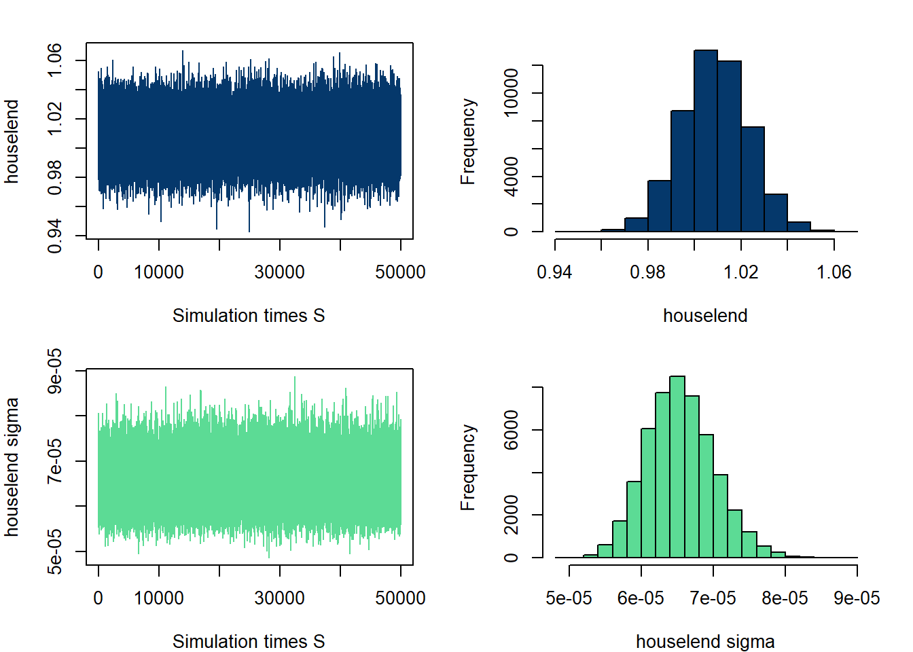
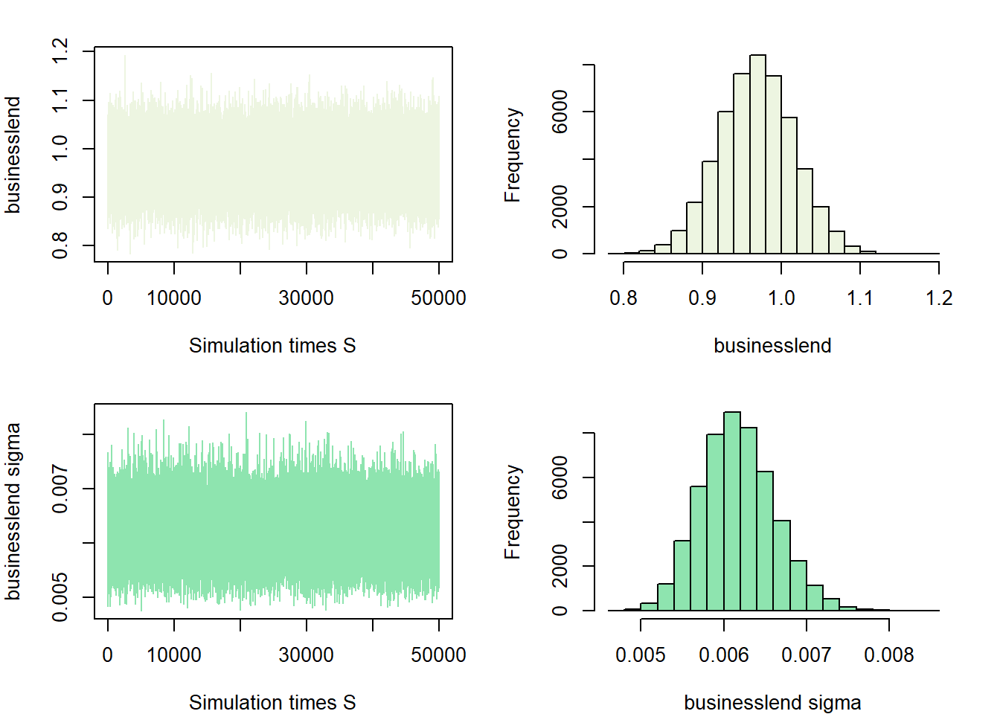
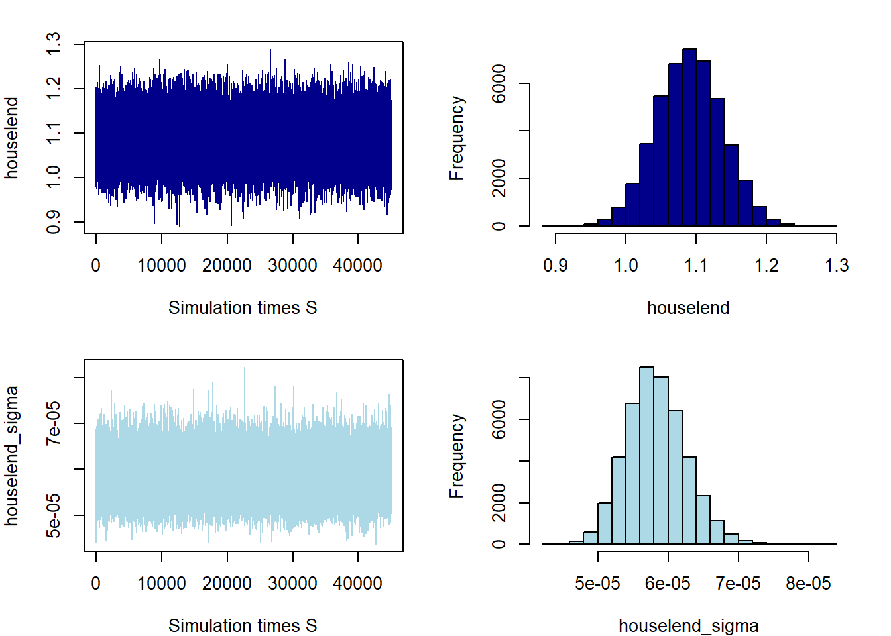
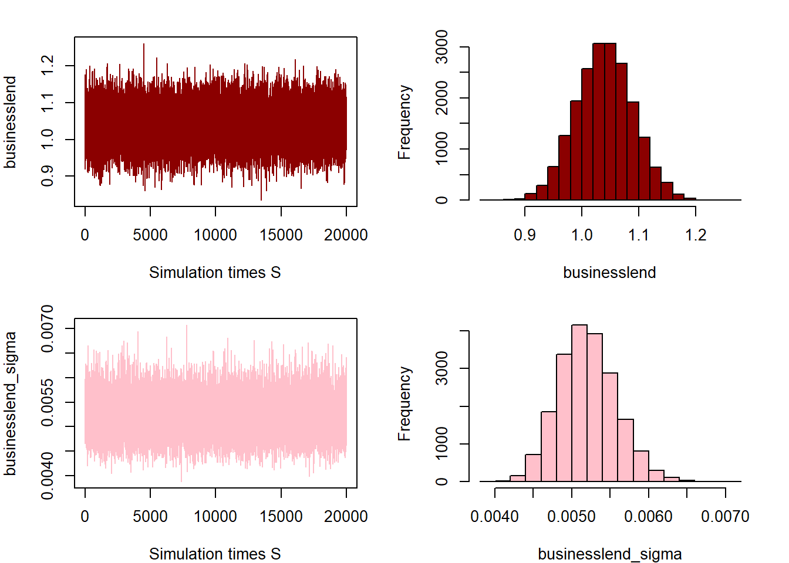
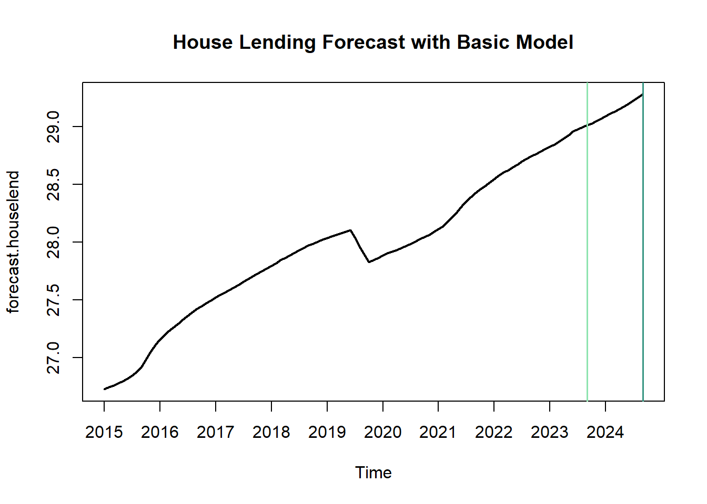
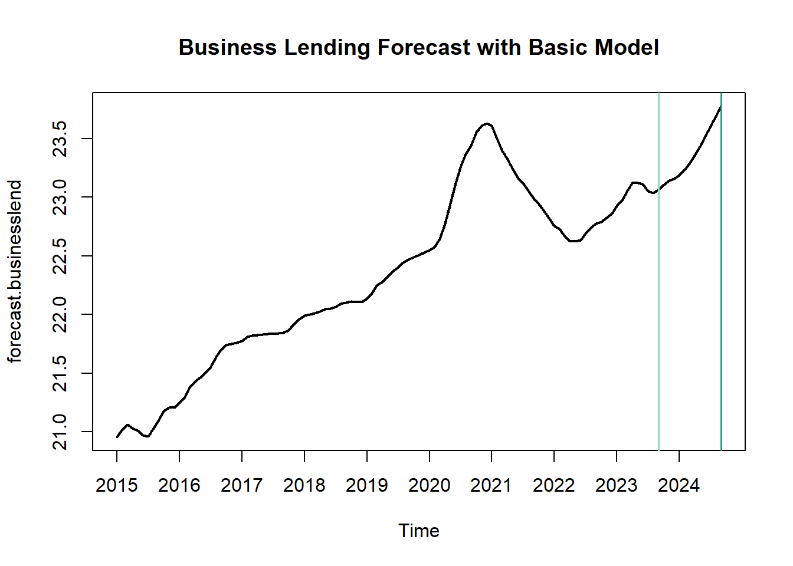
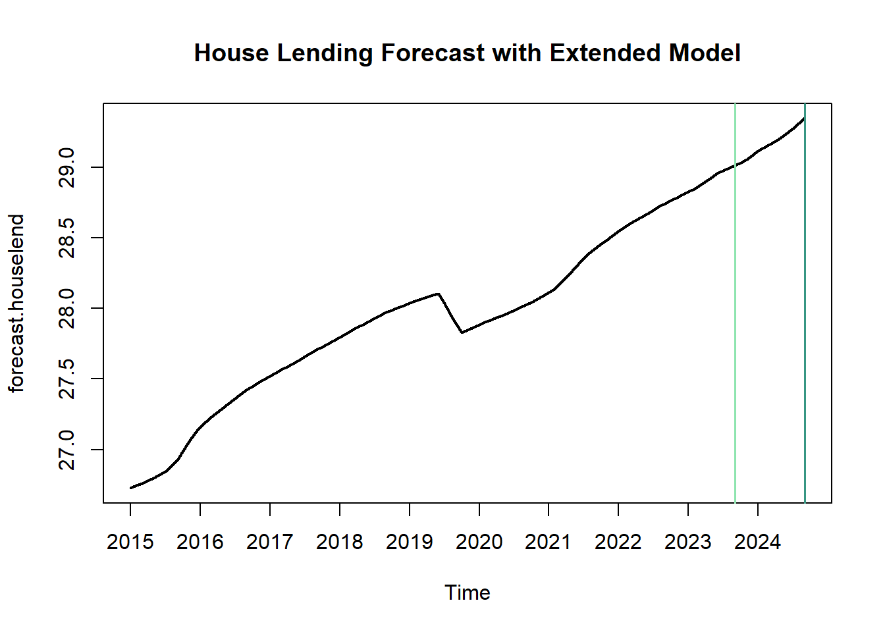
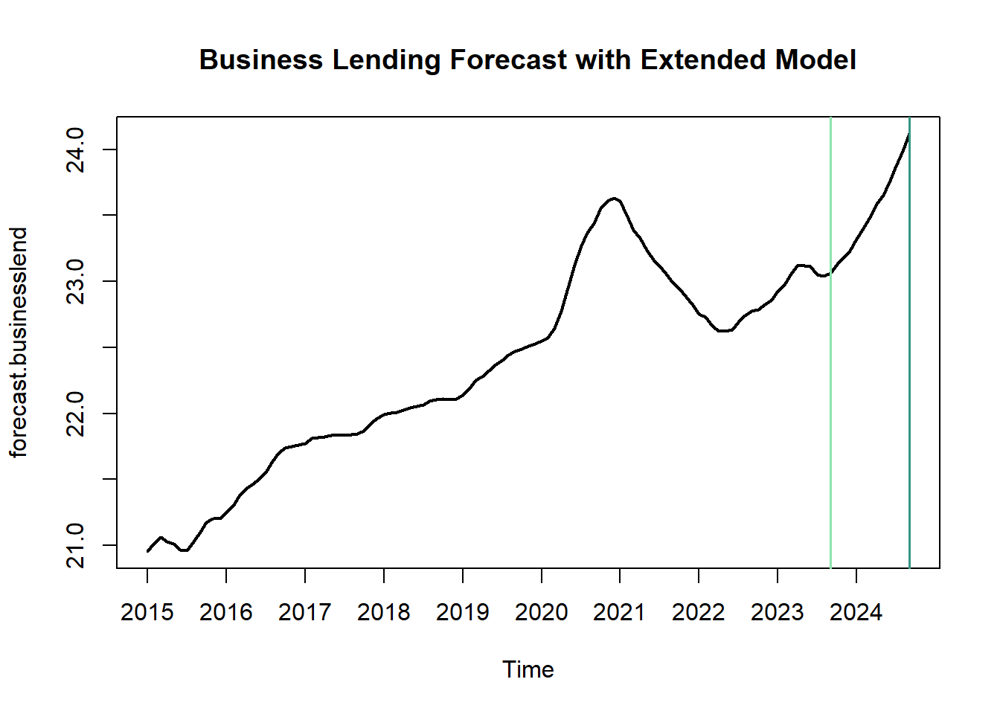

Forecasting Lending Amount in Australia Economy Through Bayesian VAR Approach
Abstract: This paper aims to forecast the Australian lending amounts using a Bayesian Var approach. Briefly introduce the research method and and purpose.
Keywords. bsvars, forecasting, credit market, lending amount, shrinkage, housing market
Introduction
This project is focusing on the credit market in Australia. It intends to use Bayesian VAR approach in forecasting of lending amounts in housing and business sector.
The Research Objective and Question: The research focuses on predicting lending trends in Australia, with an emphasis on the amounts of lending. Therefore, the question I want to answer is: How can we accurately predict Australia’s lending indicators, and what do these forecasts reveal through BVAR?
Motivation of Research: For banks and financial institutions, managing the interest rate associated with future fluctuations is crucial. Precise forecasts of lending amounts can aid these institutions in more effectively assessing and managing lending rates, which in turn helps in protecting their assets and ensuring financial stability.
Data and Properties
This section shows the data collection process and their descriptive statistic including their series plotting and basic properties through unit-root test.
Variables Selection
The selection of variables grounds in several macroeconomic indicators, derived from the official databases of the Australian Bureau of Statistics (ABS) and the Reserve Bank of Australia (RBA). The rationale for the choice of variables is informed by the work of scholars Marta Bańbura, Domenico Giannone, and Michele Lenza (2015) on European macroeconomic forecasting. This research takes similar variables in macroeconomic forecasting,including the credit market.
These indicators are closely linked to lending market. An increase in CPI indices signifies a decline in the purchasing power of money, necessitating a rise in loan rates to compensate for inflationary losses. Growth in GDP indicates economic expansion, leading to increased demand for capital, and consequently, higher lending volumes. Higher unemployment rates suggest an economic downturn, prompting banks to lower interest rates to stimulate the economy. Additionally, an abundance of monetary supply leads banks to reduce loan rates to attract more borrowers. Also, the cash target rate will influences the loan amount by affecting borrowing costs; when lowered, borrowing becomes cheaper, stimulating loan demand, The cash target rate impacts loan market volume by altering borrowing costs: lower rates stimulate loan demand, while higher rates may reduce it.
For the time range of the dataset, I cover the dataset from 1991-01 to 2023-09 and the time format is monthly data.
Therefore, in my project, these following specific variables are used in BVAR model:
\(m1_t\): M1 aggregate from RBA Database
\(cpi_t\): CPI aggregate from ABS Database
\(cashrate_t\): Cash Rate Target aggregate from RBA Database
\(gdp_t\): Expenditure on Gross Domestic Product (GDP) aggregate from ABS Database
\(unemploy_t\): Unemplyemnt person aggregate from ABS Database
For the loan volumes to be forecasted, I have categorized them into housing loans and commercial loans, as they represent two distinct types of demand. The underlying logic influenced by macroeconomic factors might differ between them:
\(houselend_t\): House lending volume aggregate from RBA
\(businesslend_t\): Business lending volume aggregate from RBA
Transformation and Properties of the Variables
The cash rate target, \(cashrate_t\), is in percentages so it doesn’t nedd to be transformed. All other variables are applied in the log-transformation and the result are below:
\(m1_t=\log(m1_t)\)
\(cpi_t=\log(cpi_t)\)
\(gdp_t=\log(gdp_t)\)
\(unemploy_t=\log(unemploy_t)\)
\(houselend_t=\log(houselend_t)\)
\(businesslend_t=\log(businesslend_t)\)
Their time series plots result are below:

Variables’ stationarity is crucial for robustness of models and prediction stability, so we need to use Augmented Dickey-Fuller (ADF) test to make sure that the variables are stationary.
Using the testing in levels, we can see except the cash rate target, all other variables are non-stationary because their p-values are lower than 0.05. So we will perform the ADF test on first diiference to confirm whether the variables are stationary.
| Test | Test_Statistic | P_Value | Lags |
|---|---|---|---|
| Cash_Rate_Target | -3.6187450 | 0.0312591 | 5 |
| Unemployment | -2.4309694 | 0.3952424 | 5 |
| M1 | -2.5989604 | 0.3247770 | 5 |
| CPI | -1.2529339 | 0.8911931 | 5 |
| GDP | -2.0583596 | 0.5512835 | 5 |
| Houselend | -0.0118483 | 0.9900000 | 5 |
| Businesslend | -1.4886978 | 0.7937767 | 5 |
In the table below. we can see it is clear that in ADF test in first difference, all variables are statistically significant in stationary.
| Test | Test_Statistic | P_Value | Lags |
|---|---|---|---|
| Cash_Rate_Target - First Difference | -5.194850 | 0.01 | 5 |
| Unemployment - First Difference | -10.088903 | 0.01 | 5 |
| M1 - First Difference | -9.984243 | 0.01 | 5 |
| CPI - First Difference | -4.085297 | 0.01 | 5 |
| GDP - First Difference | -6.793545 | 0.01 | 5 |
| Houselend - First Difference | -7.068608 | 0.01 | 5 |
| Businesslend - First Difference | -8.554188 | 0.01 | 5 |
The unit root test’s result can also showed from the Autocorrelation Functions (ACF) and Partial Autocorrelation Functions (PACF) plots.


Econometric Model and Hypothesis
To forecast the loan amount in housing and business sector, the Bayesian VAR model will be used in this project. Based on the credit forecast in previous research (Louzis, 2014), we simplify this project’s notation of BVAR with \(p\) lags below:
\[\begin{align} y_t &= \mu_0 + A_1y_{t-1}+\dots+A_py_{t-p}+u_t \end{align}\]In this model, \(y_t=[m1_t\) , \(cpi_t\) , \(cashrate_t\) , \(gdp_t\) , \(unemploy_t\) , \(houselend_t\) , \(businesslend_t]'\) and it includes the eight variables we list above. The variables we used in forecasting is \(houselend_t\) and \(businesslend_t\). The \(u_t\) means the error term, which is assumed to be \(u_t|Y_{t-1}\sim\;iidN(\textbf{0}_N,I_N)\), and in this following model \(N=8\). \(A_l\) with l = 1, 2,…,p is an \(N\times N\) coefficient matrix for each lag. We can re-write it into matrix form:
\[\begin{align} Y &= XA + U \\ U &\sim MN(0, \Sigma \otimes I_T) \end{align}\]where \(Y\) is a \(T\times N\) matrix with \(Y_{T \times N} = \left( y_1', y_2', ..., y_T' \right)'\). \(X\) is a \(T\times k\) matrix, where \(k = 1 + Np\) as \(p\) is the lag order. It can be written as \(X_{T \times k} = \left( x_1', x_2', ..., x_T' \right)'\) and each \(x_t' = (1, y_{t-1}',y_{t-2}',\dots, y_{t-p}')\) which is a \(1 \times k\) matrix.\(A\) is the \(k\times N\) matrix which can be written as \(A_{k \times N} = \left( a_0, A_1,A_2 ..., A_p \right)'\). \(U_{T\times N} = \left( u_1', u_2', ..., u_T' \right)\) and it is a \(T \times N\) matrix.
Through this model, I can make prediction by using information from historical macroeconomic data to estimate the probability distribution of future variables. The outcomes of these estimations will facilitate the interpretation of future loan market trends and the impact of various macroeconomic factors on the loan market.
Estimation Procedure
Basic Model
The basic model for forecasting is built on the Normal Inverse Wishart distribution. The prior distribution of A, \(\Sigma\) are shown below:
Prior distribution
\[\begin{align} p(A,\Sigma) &= p(A|\Sigma)p(\Sigma)\\ A|\Sigma &\sim MN_{K\times N}(\underline{A}, \Sigma,\underline{V} ) \\ \Sigma &\sim IW_{N}(\underline{S}, \underline{v}) \end{align}\]In this formula:
\(\Sigma\) is a \(K \times N\) square symmetric and positive definite matrix.
\(\underline{A}\) is a \(K \times N\) matrix for the first lag of \(houselend_t\).
\(\underline{V}\) means the shrinking level for \(\underline{A}\). When \(\underline{V}\) becomes higher, the shrinkage will be looser.
\(\underline{S}\) is a \(N\) vector diagonal matrix.
\(\underline{v}\) equals to \(N+1\).
posterior distribution
Based on the prior distribution, we can infer the posterior distribution below:
\[\begin{align} p(A,\Sigma | Y,X) &= p(A|Y,X,\Sigma)p(\Sigma|Y,X)\\ p(A|Y,X,\Sigma)&\sim MN_{K\times N}(\overline{A}, \Sigma,\overline{V} ) \\ p(\Sigma|Y,X)&\sim IW_{N}(\overline{S}, \overline{v}) \end{align}\]The parameters \(\overline{V}\), \(\overline{S}\), \(\overline{A}\), and \(\overline{v}\) are list below:
Then we can drive the joint posterior distribution:
## Posterior sample draw function for normal-inverse Wishard posterior parameters
posterior.draws = function (S, Y, X){
V.bar.inv = t(X)%*%X + diag(1/diag(V.prior))
V.bar = solve(V.bar.inv)
A.bar = V.bar%*%(t(X)%*%Y + diag(1/diag(V.prior))%*%A.prior)
nu.bar = nrow(Y) + nu.prior
S.bar = S.prior + t(Y)%*%Y + t(A.prior)%*%diag(1/diag(V.prior))%*%A.prior - t(A.bar)%*%V.bar.inv%*%A.bar
S.bar.inv = solve(S.bar)
# draw the posterior
Sigma.posterior = rWishart(S, df=nu.bar, Sigma=S.bar.inv)
Sigma.posterior = apply(Sigma.posterior,3,solve)
Sigma.posterior = array(Sigma.posterior,c(N,N,S))
A.posterior = array(rnorm(prod(c(dim(A.bar),S))),c(dim(A.bar),S))
L = t(chol(V.bar))
for (s in 1:S){
A.posterior[,,s]= A.bar + L%*%A.posterior[,,s]%*%chol(Sigma.posterior[,,s])
}
output = list(A.posterior=A.posterior, Sigma.posterior=Sigma.posterior)
return(output)
}
## Applying function
# A.hat = solve(t(X)%*%X)%*%t(X)%*%Y
posterior.sample.draws = posterior.draws(S=50000, Y=Y, X=X)The graphs below show the posterior distribution for \(houselend_t\) and \(businesslend_t\):
[,1] [,2] [,3] [,4] [,5] [,6] [,7]
[1,] 0.010855 0.339030 1.819197 0.607669 -0.130399 0.255152 0.795150
[2,] 1.008877 0.079032 0.096053 0.044579 -0.020457 0.036650 -0.003503
[3,] -0.004623 0.968626 -0.067128 0.009255 -0.008733 0.006886 -0.004065
[4,] 0.003427 0.030149 1.275895 -0.024128 -0.017283 0.008242 0.000315
[5,] -0.003666 0.169789 -0.185997 0.878305 -0.020818 0.000122 -0.003681
[6,] 0.004868 -0.105386 -0.149351 0.150758 0.720840 0.041783 -0.006666 [,1] [,2] [,3] [,4] [,5] [,6] [,7]
[1,] 6.5e-05 0.000033 0.000049 0.000019 -0.000013 0.000007 -3.0e-06
[2,] 3.3e-05 0.006170 -0.000106 -0.000086 -0.000034 0.000047 -3.3e-05
[3,] 4.9e-05 -0.000106 0.020187 -0.000428 -0.000344 0.000149 3.0e-05
[4,] 1.9e-05 -0.000086 -0.000428 0.002644 0.000040 0.000007 -2.9e-05
[5,] -1.3e-05 -0.000034 -0.000344 0.000040 0.000471 0.000017 -9.0e-06
[6,] 7.0e-06 0.000047 0.000149 0.000007 0.000017 0.000079 2.2e-05

Extended Model
Compared to the basic model, the extended model contains a hierarchical structure and introduces a shrinkage parameter kappa \(k\) that follows an inverse gamma 2 distribution. This new structure in the extended model will facilitate the modeling of the complexity inherent in time series.
The extended model’s distribution is specified below:
\[\begin{align} p(A,\Sigma, k |Y,X) &\propto L(Y,X|A,\Sigma)p(A,\Sigma, k)\\ &\propto L(Y,X|A,\Sigma)p(A |\Sigma, k)p(\Sigma)p(k) \end{align}\] \[\begin{align} p(A |\Sigma, k) &\sim MN_{K\times N}(\underline{A}, \Sigma, k\underline{V})\\ p(\Sigma) &\sim IW_{N}(\underline{S},\underline{v})\\ p(k) &\sim IG2(\underline{S_{k}}, \underline{v_{k}} ) \\ \end{align}\]Their full conditional posterior distribution of \(k\) is:
\[\begin{align} p(k |Y,X,A,\Sigma ) &\propto L(Y,X|A,\Sigma)p(A,\Sigma, k)\\ &\propto L(Y,X|A,\Sigma)p(A |\Sigma, k)p(\Sigma)p(k) \\ &\propto p(A |\Sigma, k)p(k) \end{align}\] \[\begin{align} p(k |Y,X,A,\Sigma ) &\propto \det(k\underline{V})^{-\frac{N}{2}}\exp\left\{-\frac{1}{2}TR[\Sigma^{-1}(A-\underline{A})'\underline{V}^{-1}(A-\underline{A})] \right\} k^{-\frac{\underline{v_{k}+2}}{2}}\exp\left\{ -\frac{1}{2}\frac{\underline{S_{k}}}{k} \right\} \\ & = k^{-\frac{kN+\underline{v_{k}+2}}{2}}\exp\left\{-\frac{1}{2}\frac{TR[\Sigma^{-1}(A-\underline{A})'\underline{V}^{-1}(A-\underline{A})]+\underline{S_{k}}}{k} \right\} \end{align}\]Each parameters’ posterior distribution can be written below:
\[\begin{align} p(A |Y,X,\Sigma, k) &\sim MN_{K\times N}(\overline{A}, \Sigma, \overline{V})\\ p(\Sigma|Y,X,A,k) &\sim IW_{N}(\overline{S},\overline{v})\\ p(k |Y,X, A,\Sigma) &\sim IG2(\overline{S_{k}}, \overline{v_{k}} ) \\ \end{align}\]These are the posterior distribution of \(A\), \(\Sigma\) and \(k\). The matrix \(A\) follows a Matrix Normal distribution with mean matrix \(\overline{A}\), covariance matrix \(\Sigma\) and scaling matrix \(\overline{V}\).
The covariance matrix \(\Sigma\) follows Inverse Wishart distribution with a scale matrix \(\overline{S}\) and degrees of freedom \(\overline{v}\)
The shrinkage parameter \(k\) follows inverse Gamma 2 distribution with shape parameter \(\overline{S_{k}}\) and scale parameter \(\overline{v_{k}}\)
And below are the specified values:
After we get the posterior distribution \(p(A,\Sigma, k |Y,X)\), the Gibbs sampler method will be used for generating samples. This approach can deal with complex Bayesian model where can not find analytical solutions.
The graphs below show the posterior distribution for \(houselend_t\) and \(businesslend_t\) in extended model:
# setup
S1 = 5000 # determine the burn-in draws
S2 = 20000 # number of draws from the final simulation
total_step = S1+S2
A.posterior = array(NA, dim = c((1+N*p),N,S1+S2))
Sigma.posterior = array(NA, dim = c(N,N,S1+S2))
k.posterior = matrix(NA, S1+S2, 1)
k.posterior[1] = 10 # set k0
# Prior IG2 distribution: kappa
S.k.prior = 3
nu.k.prior = 5
## Posterior sample draw function for extended model
posterior.draws.exten = function (total_steptep, Y, X){
for (s in 1:total_step){
# normal-inverse Wishard posterior parameters
V.bar.inv = t(X)%*%X + diag(1/ diag( k.posterior[s]* V.prior))
V.bar = solve(V.bar.inv)
A.bar = V.bar%*%(t(X)%*%Y + diag(1/diag( k.posterior[s]* V.prior))%*%A.prior)
nu.bar = nrow(Y) + nu.prior
S.bar = S.prior + t(Y)%*%Y + t(A.prior)%*%diag(1/diag(k.posterior[s]*V.prior))%*%A.prior - t(A.bar)%*%V.bar.inv%*%A.bar
S.bar.inv = solve(S.bar)
# posterior draws for A and Sigma
Sigma.posterior.IW = rWishart(1, df=nu.bar, Sigma=S.bar.inv)
Sigma.posterior.draw = apply(Sigma.posterior.IW,3,solve)
Sigma.posterior[,,s] = Sigma.posterior.draw
A.posterior[,,s] = array(rnorm(prod(c(dim(A.bar),1))),c(dim(A.bar),1))
L = t(chol(V.bar))
A.posterior[,,s] = A.bar + L%*%A.posterior[,,s]%*%chol(Sigma.posterior[,,s])
# posterior draws for k
if (s!=total_step){
S.k.bar = sum(diag( Sigma.posterior.IW[,,1] * t(A.posterior[,,s]-A.prior)%*%diag(1/diag(V.prior))%*%(A.posterior[,,s]-A.prior) )) + S.k.prior
nu.k.bar = (1+p*N)*N+ nu.k.prior
k.draw.tmp = rchisq(1, df=nu.k.bar)
k.draw = S.k.bar/k.draw.tmp
k.posterior[s+1] = k.draw
}
}
output = list (A.posterior.exten = A.posterior, Sigma.posterior.exten = Sigma.posterior, k.posterior.exten = k.posterior)
return(output)
}
## Applying function
posterior.ext = posterior.draws.exten(total_step = total_step, Y=Y, X=X) [,1] [,2] [,3] [,4] [,5] [,6] [,7]
[1,] -0.330085 4.299778 19.880157 1.604179 -1.119829 0.289208 0.352402
[2,] 1.091813 0.331336 1.025494 0.344201 -0.080245 0.010319 0.006877
[3,] -0.005698 1.039242 -0.099169 -0.004162 -0.005743 -0.000041 0.000072
[4,] 0.002206 0.036898 1.272817 -0.024880 -0.015266 0.001162 0.000001
[5,] 0.000537 0.226225 -0.260796 0.877135 -0.007023 -0.003952 0.001508
[6,] 0.014001 -0.284877 -0.280987 0.329522 0.882095 0.007452 -0.008520 [,1] [,2] [,3] [,4] [,5] [,6] [,7]
[1,] 5.8e-05 0.000022 0.000057 0.000005 -0.000018 1.0e-06 0.0e+00
[2,] 2.2e-05 0.005203 -0.000190 -0.000050 -0.000002 1.0e-06 -7.0e-06
[3,] 5.7e-05 -0.000190 0.016656 -0.000195 -0.000195 1.7e-05 1.4e-05
[4,] 5.0e-06 -0.000050 -0.000195 0.001541 -0.000031 -9.0e-06 -9.0e-06
[5,] -1.8e-05 -0.000002 -0.000195 -0.000031 0.000254 0.0e+00 -2.0e-06
[6,] 1.0e-06 0.000001 0.000017 -0.000009 0.000000 4.0e-06 1.0e-06[1] 165.3046

We can see that compared to basic model, the extended model gives more variability of \(A\). For house lending amount, it has larger range which range from 0.9 to 1.3, and that in basic model range from 0.94 to 1.06. For business lending amount, the result from both models don’t have strong difference.
Proving Model
In this section, I simulate 10000 observations for Gaussian random walk process to prove the models. The codes below can prove that the basic and extended models can replicate the correct variables in DGP.
sim1 = cumsum(rnorm(10000, 0, sd=1))
sim2 = cumsum(rnorm(10000, 0, sd=1))
sim= cbind(sim1,sim2)
## Define data X, Y
Y = ts(sim[2:nrow(sim),], frequency=1)
X = matrix(1,nrow(Y),1)
X = cbind(X,sim[2:nrow(sim)-1,])
## Test on basic model
N = ncol(Y)
p = frequency(Y)
A.hat = solve(t(X)%*%X)%*%t(X)%*%Y
Sigma.hat = t(Y-X%*%A.hat)%*%(Y-X%*%A.hat)/nrow(Y)
# Prior distribution specification - Minnesota prior
kappa.1 = 1 # shrinkage for A1 to Ap
kappa.2 = 10 # shrinkage for constant
A.prior = matrix(0,nrow(A.hat),ncol(A.hat))
A.prior[2:(N + 1),] = diag(N)
V.prior = diag(c(kappa.2,kappa.1*((1:p)^(-2))%x%rep(1,N)))
S.prior = diag(diag(Sigma.hat))
nu.prior = N+1
# Applying function
posterior.sample.draws = posterior.draws(S=100000, Y=Y, X=X)
round(apply(posterior.sample.draws$A.posterior, 1:2, mean),6)
round(apply(posterior.sample.draws$Sigma.posterior, 1:2, mean),6)kappa.1 = 1
kappa.2 = 10
sim1 = 1000
sim2 = 10000
total = sim1+sim2
A.posterior = array(NA, dim = c((1+N*p),N,sim1+sim2))
Sigma.posterior = array(NA, dim = c(N,N,sim1+sim2))
k.posterior = matrix(NA, sim1+sim2, 1)
k.posterior[1] = 10 # set k0
# Prior IG2 distribution: kappa
S.k.prior = 2
nu.k.prior = 4
# Applying function
posterior.ext = posterior.draws.exten(total = total, Y=Y, X=X)
round(apply(posterior.ext$A.posterior.exten[,,(sim1+1):sim2], 1:2, mean),6)
round(apply(posterior.ext$Sigma.posterior.exten[,,(sim1+1):sim2], 1:2, mean),6)Model Forecasting
In this section, the forecasting will focus on predicting the houselend amount and businesslend amount in next 12 months based on current data (until 2023.9). The forecasting will used the basic model and extended model together.
Forecasting for basic BVAR model
Print the forecasting result for next 12 months for the house lending amount and business lending amount.


The graphs above shows the plots for the forecasting value for house lending amount and business lending amount in the basic model.
To show the forecasting value clearly, I just present the data from 2015. And the forecasting values are marked by two lines.
So we can see from 2023 Q3 to 2024 Q3, the house lending amount will keep increasing in a steady speed.
And the business lending amount will end the downward trend and a growth will occur at a fast rate. This trend is similar to the rapid growth in 2020 to 2021.
Forecasting for extended BVAR model


A view of the plots above, for the extended model, it performs similar in trends but some difference still shows in the plots. Their increasing speed is faster and we can see the time plot for them show a steeper trend.
Conclusion
In this research project, we use two BVAR models for forecasting the house lending amount (\(houselend_t\)) and business lending amount (\(businesslend_t\)) in Australia. For the basic model, we use the simple minnesota prior specifications to capture the features in the dataset. Then we build the hierarchical model as extension by using the Minnesota shrinkage hyperparameter kappa \(k\) into basic model. Then lastly, we forecast the 12 monthly ahead in the future and compare the result between base model and extension model.
Reference
Louzis, Dimitrios P., Macroeconomic and Credit Forecasts in a Small Economy During Crisis: A Large Bayesian VAR Approach (June 1, 2014). Bank of Greece Working Paper No. 184, Available at SSRN: https://ssrn.com/abstract=4184651 or http://dx.doi.org/10.2139/ssrn.4184651
Bańbura, M., Giannone, D., & Lenza, M. (2015). Conditional forecasts and scenario analysis with vector autoregressions for large cross-sections. International Journal of Forecasting, 31(3), 739-756. https://doi.org/10.1016/j.ijforecast.2014.08.013.